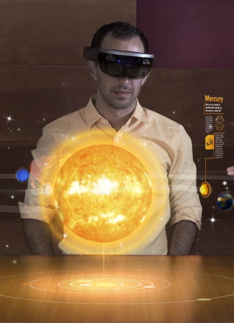

Mark A. DeFalco
Hi! I'm a software engineer with two decades of experience who loves games and entertainment. I'm passionate about cultivating engineering best practices, mentoring junior developers, and partnering with creators to deliver ambitious projects.
Projects
Microsoft Docs
Mixer: Interactive streaming
Windows Photos

HoloLens
Channel 9
MSN